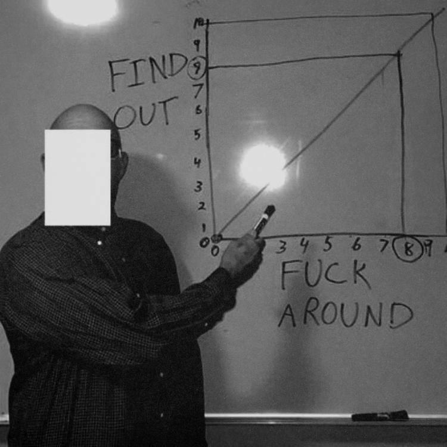

Where young mavericks build the future
Mavericks: Not afraid to take risks, question the status quo, and pursue groundbreaking ideas that could lead to major innovations and transformations.
If you’ve ever felt out of place in a world that values conformity over curiosity, welcome. You’ve found your place.
Most people are content to follow the rules and climb the ladder. FR8 is for those who won’t accept the world as it is. It’s for the restless, the builders, the scientists and the problem-solvers who see what could be instead of settling for what already exists.
FR8 is for those who are frustrated. Frustrated with a system that discourages risk-taking. A system that doesn’t celebrate people willing to bet everything on their ideas. A system that tells you what to build and what to research.
We’re frustrated too. That’s why we created FR8 — a place where you can immerse yourself into your craziest ideas and focus on your true interests.
Concretely
We're a small group of dropouts who took over an entire former university and turned it into a real-life Hogwarts. We bring together the smartest young mavericks from all around the globe and give them a chance to go all-in on their craziest ideas.

Here’s what we offer
- Accommodation and food. You get your own room and startup-style 5-star service fully covered for the whole duration of the program. We have two private chefs and we even take care of your laundry.
- We cover your flights back and forth.
- A community built around high standards, curiosity, and interest in solving complex problems.
- A program tailored to help you learn agency, sales, communications, and other skills needed to shape the world.
- Access to our global network of founders, investors, professors, companies, and industry experts.
- Tools: Software credits, hardware lab, and compute.
We’re serious about our work. This means doing everything we can to help those who are serious about changing the world.
Who are we looking for
People ready to go all in on their craziest ideas.
If you’ve built things from scratch, obsess over specific technologies, fall down Wikipedia rabbit holes, feel like you don’t quite fit the system, or want to push your limits and go all in, you might be exactly who we’re looking for. If you wake up every day with a burning need to create, solve, and learn, we want to know more about you.
- Mostly people under 30.
- Technical talent working on software, hardware, or deep-tech. If you have a non-technical background, you must apply as part of a team with a technical member.
- People driven by a hunger for progress, not for money or status, but for growth, innovation, and creation.
- We welcome solo founders and researchers, but we prefer teams.
What do we believe in?
- First-principles thinking: Question everything, break it down, and build from the ground up.
- Rules are made up by people.
- Techno-optimism: Technology can solve humanity’s toughest problems.
- Results over ideas. Execution is everything.
- Deep work > shallow work.
- Substance > signal.

Our values
- Kindness: We have a strict no-assholes policy.
- Significance: If you’re here to cash out with a quick B2B SaaS exit, look elsewhere.
- Hard work: We have high standards. If you’re not meeting them, you’re out.
- Craziness: The kind that sparks bold ideas.
- Maverick spirit: Follow your own path and intuition.
- Builders, nerds, and visionaries: You are our people.
Funding
We don't take any equity for participating in the program. Zero cost. No strings attached.
We offer optional funding of $100k on an uncapped SAFE for 2% equity.
Location
We are located in Helsinki, Finland.
That means dark, freezing winters, ice-cold sea plunges, and people who treat small talk like a mortal sin. Perfect conditions for an all-in focus retreat.
Our program is global, and so far we’ve had participants from over 20 nationalities.
Next cohort
The next cohort (2.f) runs from August 24 to November 21, 2026.
We review applications on a rolling basis, so we recommend applying early.
If there’s a potential fit, we’ll reach out via email and start the interview process.
The demo day will take place during Slush, the largest venture capital gathering in the world, here in Helsinki.
FAQ
Can I take classes or work on other jobs while at FR8?
No.
Do I need an idea to apply?
No. FR8 is the perfect place to tinker.
Does my idea have to be super technical?
Not necessarily. We are looking for people focused on pushing humanity forward. It just often happens through technology.
How is FR8 different from typical startup accelerators?
We back people who want to work on ideas that are too early, too weird, and too ambitious. No credentials required. No permission to seek. We welcome founders, builders, researchers and visionaries.
How does the selection process work?
We’ll contact you via email if we feel like you're aligned with FR8.
Do you help with visas?
Yes.
Why did you start FR8?
One of us dreamed of building an asteroid mining company but realized that our society doesn’t encourage such bold endeavors.
FR8 exists to change that. To celebrate and support those willing to sacrifice everything in pursuit of the impossible.
Need more info?
Reach out to us at admin@fr8.so